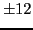
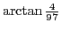

Next: Rules for differentiating standard Up: Differentiation Previous: Applications of the derivative Contents Index
Find by differentiation the slopes of the tangents to the following curves at the points indicated. Verify each result by drawing the curve and its tangent.
(Ans. (a) 0; (b) .)
(Ans. (a) , ; (b) .)
Here's how to use SAGE to verify these:
[fontsize=\scriptsize,fontfamily=courier,fontshape=tt,frame=single,label=\sage] sage: solve(3*x^2 - 1 == 2*x^2 + 3,x) [x == -2, x == 2] sage: g(x) = diff(3*x^2 - 1,x) sage: h(x) = diff(2*x^2 + 3,x) sage: g(2); g(-2) 12 -12 sage: h(2); h(-2) 8 -8 sage: atan(12)-atan(8) atan(12) - atan(8) sage: atan(12.0)-atan(8.0) 0.0412137626583202 sage: RR(atan(4/97)) 0.0412137626583202